MRACC-Spark性能加速最佳实践
概述
本教程为您介绍通过简单配置，就可以基于FASTMR在阿里云上自动拉起Spark+Hadoop大数据集群，实现集群互联、组件部署和监控，并集成 MRACC-Spark 加速套件，在TPCDS基准测试中验证性能提升。通过本教程，您将大大简化云上大数据集群的部署流程，快速完成大数据业务的选型验证（PoC）。
部署流程
创建服务实例
第一步：选择配置
-
服务实例名称（非必填，如无特殊要求，可以自定义或不填写使用默认值）；
-
选择部署地域（可以自定义选择，如无特殊要求，保持默认即可）；
-
资源配置：
-
选择付费时长（默认按量付费）；
-
这里阿里云也推荐了几款配置套餐，分别是8xlarge规格1master+3worker，以及16xlarge规格实例1master+3worker，可以按需选择，或者自定义套餐配置:
-
| 套餐名 | 说明 |
|---|---|
| 8xlarge 1+3规模测试 | 1master+3worker集群规模，默认测试1000G大小的TPCDS数据集规模。需要进一步选定实例类型，如g8i,g8a, g8y等 |
| 16xlarge 1+3规模测试 | 1master+3worker集群规模，默认测试3000G大小的TPCDS数据集规模。需要进一步选定实例类型，如g8i,g8a, g8y等 |
| 自定义套餐 | 可自由选择ECS实例，集群规模，和数据盘等配置 |
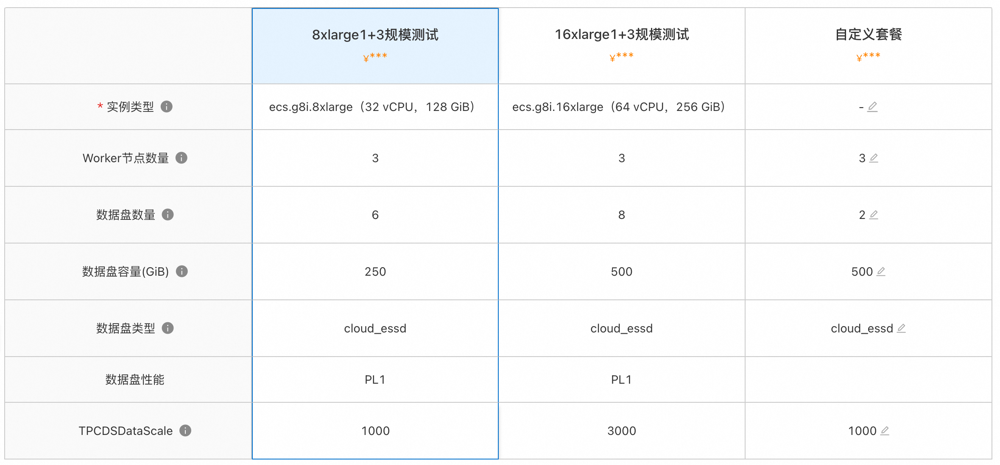 3. 配置可用区（如无特殊要求，保持默认即可）。
-
配置ECS服务器密码（记住你的密码，后面要用）；
-
网络配置：
-
专有网络：可以选择新建或者已有专有网络，默认新建
-
专有网络网段：根据需求选择（如无特殊要求，保持默认即可）。
-
交换机子网网段：（如无特殊要求，保持默认即可）
-
标签和资源组：
-
标签：非必填，按需填写（如无特殊要求，保持默认即可）。
-
资源组：非必填，按需填写（如无特殊要求，保持默认即可）。
第二步：确认订单
- 在确认页面，勾选同意服务条款，点击“立即创建”，后面就是付款流程。
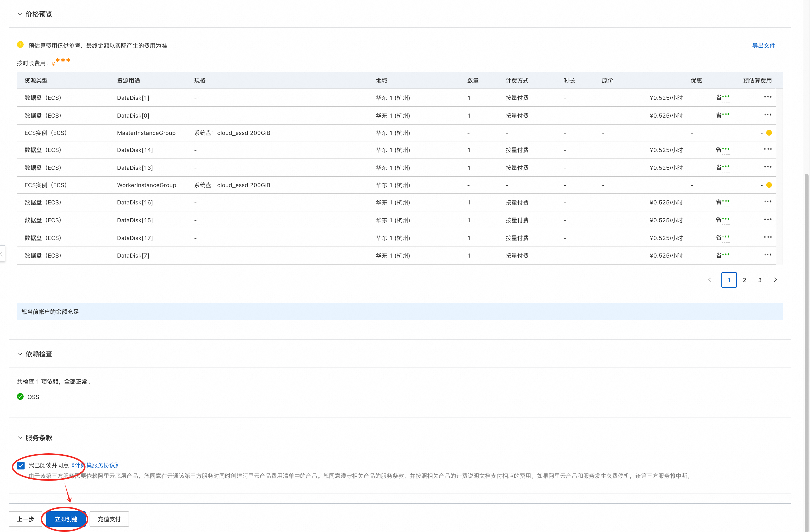
- 当出现提交成功提示，说明服务已经开始创建，点击“去列表查看”，可以看到服务正在部署中。
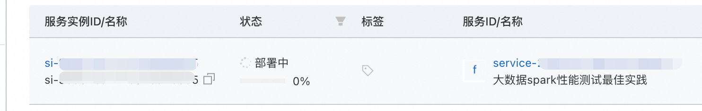
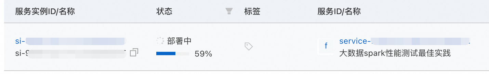
第三步：进入服务实例详情
- 服务部署包括大数据环境搭建和测试任务拉起，大约需要8分钟左右，点击服务实例ID进入服务详情。
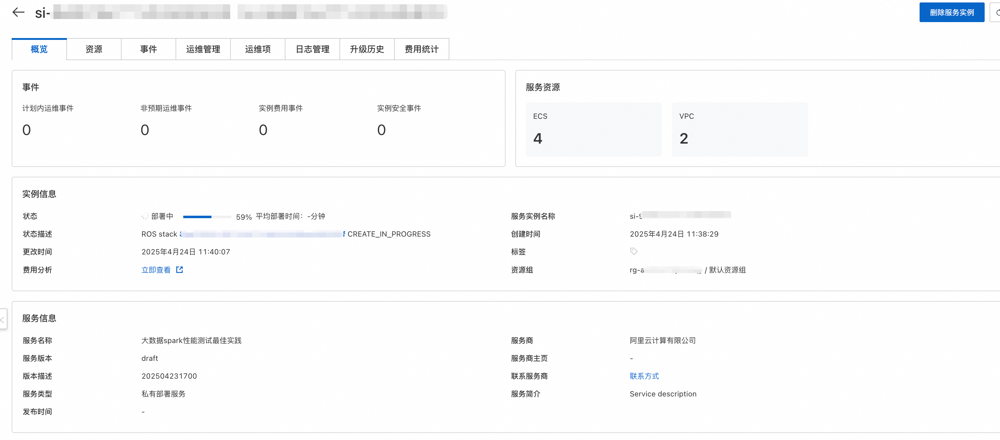
-
到这一步的时候，ECS实例上已经在部署数据spark+hadoop环境了，无需手动操作，非常方便。
-
看到“立即使用”“yarnhistory address”以及“tpcds result”，这就是大数据环境的masterIP地址了，说明环境已经搭建完成，测试任务已经拉起，结果将被写到对应的oss目录。
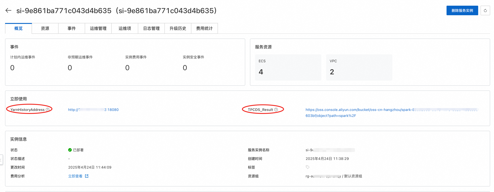
-
当对应的oss目录出现tpcds_result.csv文件时，说明tpcds测试已经完成，您下载可以查看结果。
- 耗时时间跟集群规模以及测试数据规模相关，基于经验8xlarge 1+3 集群规模测试tpcds1000GB, 数据生成和查询流程耗时约1h
至此，您已经成功搭建了大数据spark+hadoop环境，并进行了tpcds性能测试 。
登录master
前置条件：需要在master的ECS实例的安全组中，添加您的本地ip地址。
- 远程连接ECS实例
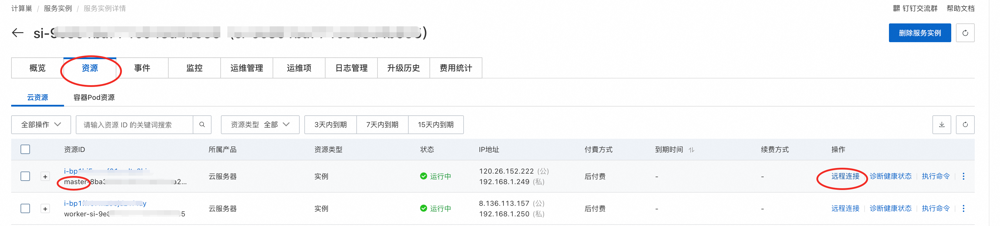
删除服务实例
- 服务实例列表，点击删除按钮，确认删除。
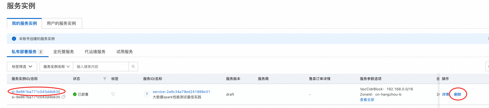
- 进入服务实例详情页，点击右上角“删除服务实例”
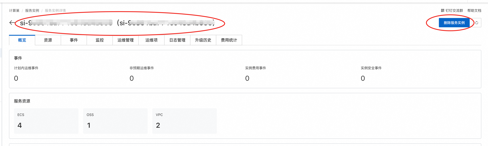
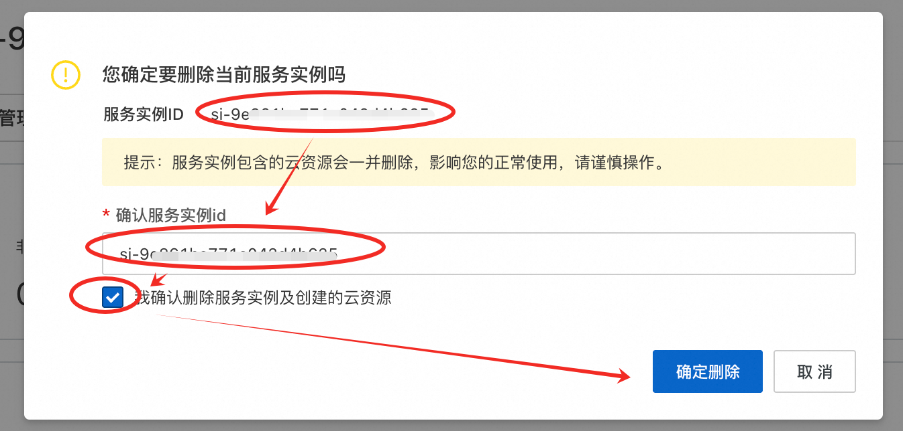
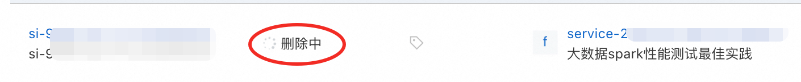
官方支持
您有任何问题或者建议，可以使用钉钉扫描下方二维码，加人我们的官方服务群，我们将非常欢迎您的建议和反馈～
常见问题
- StackValidationFailed 云资源在选定的可用区库存不足，请更换可用区或者地域重试
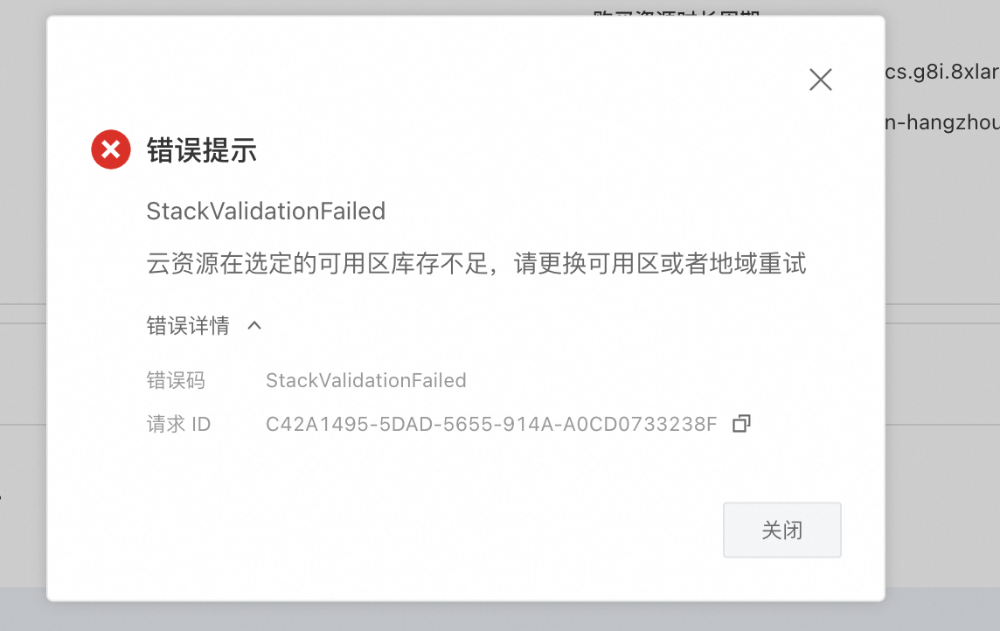
解决：尝试更换地域和可用区， 如beijing-l, hangzhou-j等